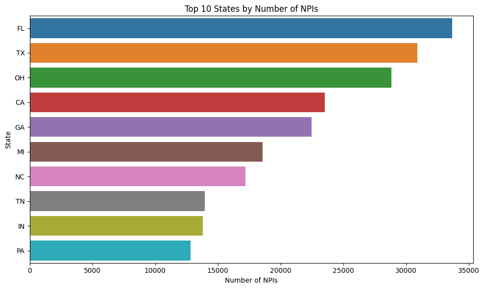
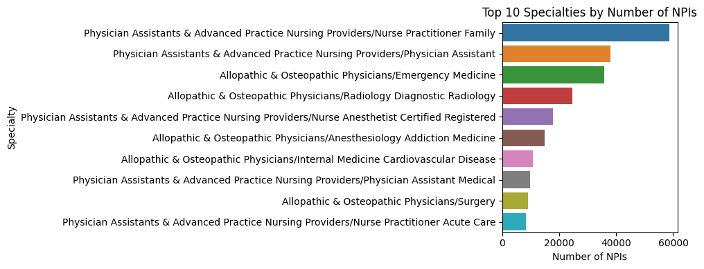

import csv
import pandas as pd
import matplotlib.pyplot as plt
import seaborn as sns
file_path = '/content/tin_npi_1.csv'
df = pd.read_csv(file_path)
df['Geographical_Location'] = df['PROVIDER_BUSINESS_MAILING_ADDRESS_STATE_NAME']
df['Specialty'] = df['PROVIDER_TAXONOMY_DESCRIPTION']
# Count the number of NPIs by top states/Specialty
top_states = df['Geographical_Location'].value_counts().head(10)
top_specialties = df['Specialty'].value_counts().head(10)
# Plotting top states
plt.figure(figsize=(10, 6))
sns.barplot(x=top_states.values, y=top_states.index, hue=top_states.index, dodge=False, legend=False)
plt.xlabel('Number of NPIs')
plt.ylabel('State')
plt.title('Top 10 States by Number of NPIs')
plt.tight_layout()
plt.show()
# Plotting top states
plt.figure(figsize=(10, 4))
sns.barplot(x=top_specialties.values, y=top_specialties.index, hue=top_specialties.index, dodge=False, legend=False)
plt.xlabel('Number of NPIs')
plt.ylabel('Specialty')
plt.title('Top 10 Specialties by Number of NPIs')
plt.tight_layout()
plt.show()

